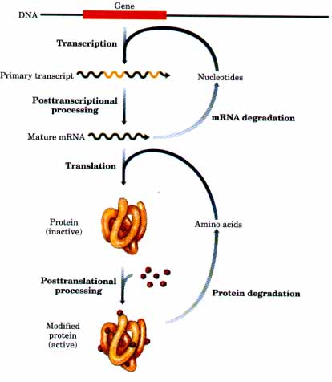
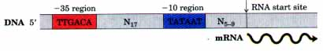
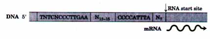
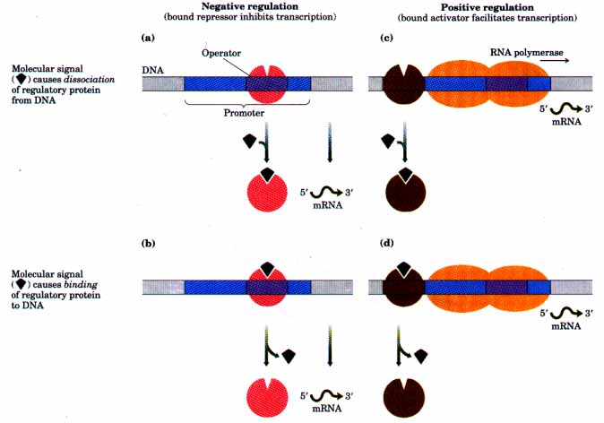

Regulation of Gene Expression
Of the 4,000 genes in the typical bacterial genome or the estimated 100,000 genes in the human genome, only a fraction are expressed at any given time. Some gene products have functions that mandate their presence in very large amounts. The elongation factors required for protein synthesis, for example, are among the most abundant proteins in bacteria. Other gene products are needed in much smaller amounts; for instance, a cell may contain only a few molecules of the enzymes that repair rare DNA lesions. Requirements for a given gene product may also change with time. The need for enzymes in certain metabolic pathways may wax or wane as food sources change or are depleted. During development in a multicellular eukaryote, some proteins that influence cellular differentiation are present for only a brief time in a small subset of an organism's cells. The specialization of some cells for particular functions can also dramatically affect the need for various gene products, one example being the uniquely high concentration of hemoglobin in erythrocytes.
The regulation of gene expression is a critical component in regulating cellular metabolism and in orchestrating and maintaining the structural and functional differences that exist in cells during development. Given the high energetic cost of protein synthesis, regulation of gene expression is essential if the cell is to make optimal use of available energy.
| Regulating the concentration of a
cellular protein involves a delicate balance of many
processes. There are at least six potential points at
which the amount of protein can be regulated (Fig. 27-1):
synthesis of the primary RNA transcript,
posttranscriptional processing of mRNA, mRNA degradation,
protein synthesis (translation), posttranslational
modification of proteins, and protein degradation. The
concentration of a given protein is controlled by
regulatory mechanisms at any or all of these points. Some
of these mechanisms have been examined in previous
chapters. Posttranscriptional modification of mRNAs by
processes such as differential splicing (p. 873) or RNA
editing (see Box 26-1) can affect which proteins are
produced from an mRNA transcript and in what amounts. A
variety of sequences can affect the rate at which an mRNA
is degraded (p. 880). Many factors that affect the rate
at which an mRNA is translated into a protein, as well as
the posttranslational modification and eventual
degradation of that protein, were described in Chapter
26. Our primary focus in this chapter is the regulation of transcription initiation (although some aspects of the regulation of translation will be described). Of all the processes illustrated in Figure 27-l, regulation at the level of transcription initiation is the best documented and may be the most common. At least one important reason is clear: as for all biosynthetic pathways, the most efficient place for regulation is the first reaction in the pathway. In this way, unnecessary biosynthesis can be halted before energy is invested. l~anscription initiation also is an excellent point at which to coordinate the regulation of multiple genes whose products have interdependent activities. For example, when DNA is heavily damaged, bacterial cells require a coordinated increase in the levels of many enzymes involved in DNA repair. Perhaps the most sophisticated form of coordination occurs in the complex regulatory circuits that guide the development of multicellular eukaryotes. |
 Figure 27-1 Six processes that affect the steadystate concentration of a protein. Each of these processes is a potential point of regulation. |
In this chapter, we first describe the interactions between proteins and DNA that are the key to transcriptional regulation. Specific proteins that regulate the expression of specific genes will then be discussed, first for prokaryotes and then for eukaryotes. In the course of this discussion we will examine several different mechanisms by which cells regulate gene expression and coordinate the expression of multiple genes.
Just as the cellular requirements for different proteins vary, the mechanisms by which their respective genes are regulated also vary. The degree and type of regulation naturally reflect the function of the protein product of the gene. Some gene products are required all the time and their genes are expressed at a more or less constant level in virtually all the cells of a species or organism. Many of the genes for enzymes that catalyze steps in central metabolic pathways such as the citric acid cycle fall into this category. These genes are often referred to as housekeeping genes. Constant, seemingly unregulated expression of a gene is called constitutive gene expression. The amounts of other gene products rise and fall in response to molecular signals. Gene products that increase in concentration under prescribed molecular circumstances are referred to as inducible, and the process of increasing the expression of the gene is called induction. The expression of many genes encoding DNA repair enzymes, for example, is induced in response to high levels of DNA damage. Conversely, gene products that decrease in concentration in response to a molecular signal are referred to as repressible, and the decrease in gene expression is called repression. For example, the presence of ample supplies of the amino acid tryptophan leads to repression of the genes for the enzymes catalyzing tryptophan biosynthesis in bacteria.
Transcription is mediated and regulated by protein-DNA interactions. The central component is RNA polymerase, an enzyme described in some detail in Chapter 25. We begin here with a further description of RNA polymerase from the standpoint of regulation, then proceed to a general description of the proteins that modulate the activity of RNA polymerase. Finally we discuss the molecular basis for the recognition of specific DNA sequences by DNA-binding proteins.
RNA polymerases bind to DNA and initiate transcription at specific sites in the DNA called promoters (Chapter 25). Promoters generally are found very near the position where RNA synthesis begins on the DNA template. The regulation of transcription initiation is, in effect, regulation of the interaction of RNA polymerase with its promoter.
Promoters vary considerably in their nucleotide sequence, and this affects the binding affinity of RNA polymerases. The binding affinity in turn affects the frequency of transcription initiation. In E. coli, some genes are transcribed once each second whereas others are transcribed less than once per cell generation. Much of this variation is accounted for simply by differences in promoter sequences. In the absence of regulatory proteins, differences in the sequences of two promoters may affect the frequency of transcription initiation by factors of 1,000 or more. Recall (see Fig. 25-5) that E. coli promoters have a consensus sequence (Fig. 27-2). Promoters that exactly match the consensus sequence generally have the highest affinity for RNA polymerase and the highest frequency of transcription initiation. Mutations that change a consensus base pair to a nonconsensus pair generally decrease promoter function: mutations that change a nonconsensus base pair to a consensus pair usually enhance promoter function.

Figure 27-2 Consensus sequence for many E. coli promoters. N indicates any nucleotide. Most base substitutions in the -10 and -35 regions have a negative effect on promoter function. (Recall from Chapter 25 that by convention, DNA sequences are shown as they occur on the coding (nontemplate) strand. )
Although housekeeping genes are expressed constitutively, the proteins they encode are present in widely varying amounts. For these genes the RNA polymerase-promoter interaction is the only factor af fecting transcription initiation, and differences in promoter sequences allow the cell to maintain the required level of each housekeeping protein.
Transcription initiation at the promoters of many genes that do not fall in the housekeeping category is further regulated in response to molecular signals. These promoters have a basal rate of transcription initiation (determined by the promoter sequence), superimposed on which is regulation mediated by several types of regulatory proteins. These proteins affect the interaction between RNA polymerase and the promoters.
At least three types of proteins regulate transcription initiation by RNA polymerase: (1) specificity factors alter the specificity of RNA polymerase for a given promoter or set of promoters; (2) repressors bind to a promoter, blocking access of RNA polymerase to the promoter; (3) activators bind near a promoter, enhancing the RNApromoter interaction.
We encountered prokaryotic specificity factors in Chapter 25, although they were not given that name. The σ subunit (Mr 70,000) called σ70 of the E. coli RNA polymerase holoenzyme is a prototypical specificity factor that mediates specific promoter recognition and binding. Under some conditions, notably when the bacteria are subjected to heat stress, σ70 is replaced with another specificity factor (Mr 32,000) called σ32 (p. 863). When bound to Q32, RNA polymerase does not bind to the standard E. coli promoters (Fig. 27-2), but instead is directed to a specialized set of promoters with the sequence structure shown in Figure 27-3. The promoters control the expression of a set of genes that make up the heat-shock response. Altering the polymerase to direct it to different promoters is one mechanism by which a set of related genes can be coordinately regulated. Other mechanisms will be encountered throughout this chapter.

Figure 27-3 Consensus sequence for promoters that regulate the expression of genes involved in the heat-shock response in E. coli. This system responds to temperature increases as well as some other environmental stresses, and it involves the induction of a set of proteins. Binding of RNA polymerase to heat-shock promoters is mediated by a specialized β subunit of the enzyme called σ32, which replaces σ70
Repressors bind to specific sites in the DNA. In prokaryotes, the binding sites for repressors are called operators. Operator sites are generally near and often overlap the promoter so that RNA polymerase binding, or its movement along the DNA after binding, is blocked whenever the repressor is present. Regulation by means of a repressor protein that binds to DNA and blocks transcription is referred to as negative regulation. Repressor binding is regulated by a molecular signal, usually a specific small molecule that binds to and induces a conformational change in the repressor. The interaction between repressor and signal molecule may lead to either an increase or a decrease in transcription. In some cases the conformational change results in dissociation of a DNA-bound repressor from the operator (Fig. 27-4a). Transcription initiation can then proceed unhindered. In other cases the interaction between an inactive repressor and the signal molecule causes the repressor to bind to the operator (Fig. 27-4b).

Figure 27-4 Common patterns of regulation of transcription initiation. Two types of negative regulation are illustrated. (a) The repressor (red) is bound to the operator in the absence of the molecular signal; the signal causes dissociation of the repressor to permit transcription. (b) The repressor is bound in the presence of the signal; the repressor dissociates and transcription ensues when the signal is removed. Positive regulation is mediated by gene activators. (c) The activator (green) binds in the absence of the molecular signal and transcription proceeds; the activator dissociates and transcription is inhibited when the signal is added. (d) The activator binds in the presence of the signal; it dissociates only when the signal is removed. Note that "positive" and "negative" regulation are defined by the type of regulatory protein involved. In either case the addition of the molecular signal may increase or decrease transcription, depending on the effect of the signal on the regulatory protein.
Activators provide a molecular counterpoint to repressors. Regulation mediated by an activator is called positive regulation. Activators bind to sites adjacent to a promoter and enhance the binding and activity of RNA polymerase at that promoter. The binding sites for activators are often found adjacent to promoters that are normally bound weakly or not at all by RNA polymerase. Transcription at these genes is therefore often negligible in the absence of activator. Sometimes the activator is normally bound to DNA and dissociates when it binds to the signal molecule, often a speciiic small molecule or another protein (Fig. 27-4c). When bound to the DNA, the activator protein facilitates RNA polymerase binding and increases the rate of transcription initiation. In other cases the activator is not bound to the DNA until it also binds to a molecular signal (Fig. 27-4d). Positive regulation is particularly common in eukaryotes, as we shall see. We now turn to a fundamental unit of gene expression, the study of which gave rise to much of our current understanding of the regulation of gene expression.